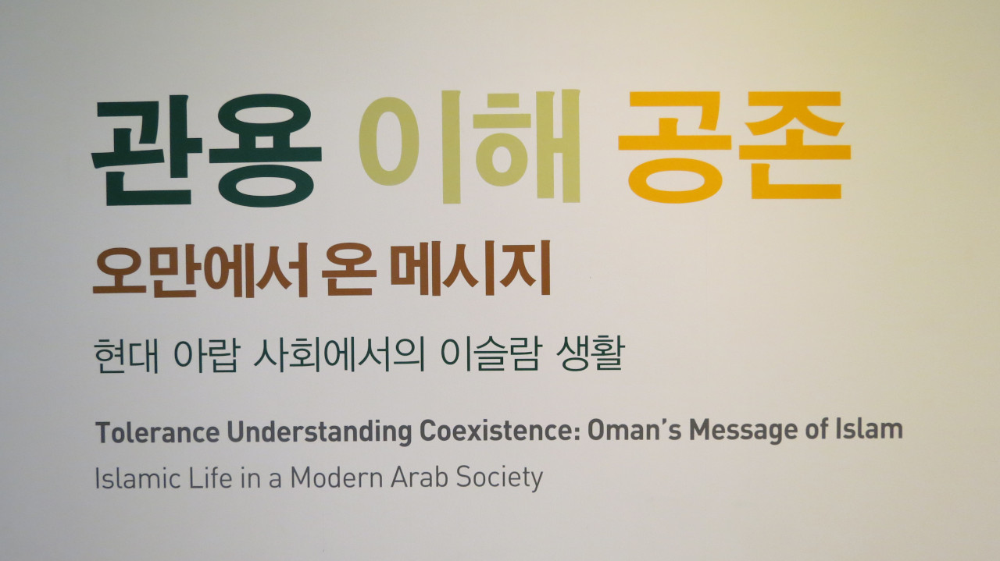
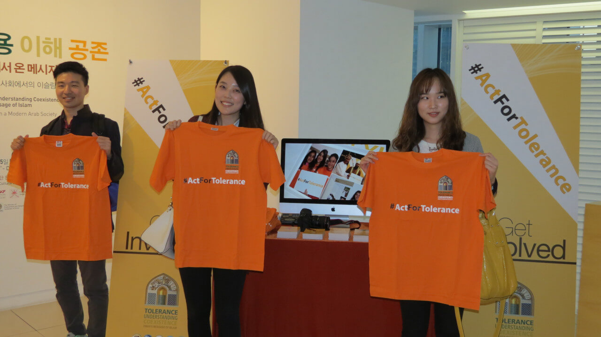

المركز الثقافي لمؤسسة كوريا، سيول، كوريا الجنوبية 2014

04 نوفمبر حتى 6 ديسمبر 2014
أقيم المعرض في المركز الثقافي لمؤسسة كوريا، برعاية سفارة سلطنة عمان في كوريا واستضافته مؤسسة كوريا.
برعاية السفارة العمانية، تم تعزيز المعرض بشكل كبير ليشمل الأعمال الفنية الأصلية، والتصوير الفوتوغرافي، واللوحات، والمخطوطات، والمطبوعات، وفن الظل، ونماذج المراكب الشراعية، والخناجر العمانية، وخدمة القهوة رمز الضيافة العربية، و لوحات مستعارة من معرض جوال آخر بعنوان "عمان الحديثة".
كما عُرضت مقاطع فيديو عن "التسامح الديني في عمان"، وتاريخ عمان مصورة بصريًا من خلال فن الرسم بالرمال.

|  |
حضر حفل الافتتاح في 4 نوفمبر، أكثر من مائة وخمسون ضيفًا وزائرًا مميزًا، بما في ذلك ممثلون حكوميون من الصين وكولومبيا وجورجيا وألمانيا وتركيا وأوكرانيا، وشخصيات معروفة من الأوساط الأكاديمية والإعلامية والقادة الدينيين من مختلف الطوائف.
وقدم كلمات افتتاحية نيابة عن مؤسسة كوريا، كل من السادة رئيسها الدكتور هيون سوك يو، و نائب الرئيس التنفيذي، زيون نام جن، ومدير المركز الثقافي لمؤسسة كوريا، تشوي هيون سو، جنبًا إلى جنب مع سعادة لي كيونج سو، نائب الخارجية الكورية للشؤون السياسية.
ومثل سلطنة عمان معالي السفير الدكتور محمد الحارثي، ومثل وزارة الاوقاف والشؤون الدينية الشيخ محمد سعيد المعمري.
تفضلوا بزيارة معرض التسامح العالمي الافتراضي بلغتكم المفضلة